West Indies ODI Team
1975 & 1979 ODI World Cup winners with flair.
About West Indies ODI Team
Country: West Indies
Home Ground: Various (e.g., Kensington Oval, Barbados)
Captain: Shai Hope
Coach: Daren Sammy
The West Indies ODI team is known for its powerful batting and pace bowling, with a historic legacy.
West Indies Players
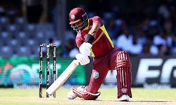
Shai Hope (C)
Captain,wicketkeeper-batsman.
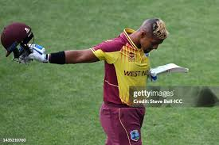
Nicholas Pooran
Wicketkeeper-batsman, power-hitter.
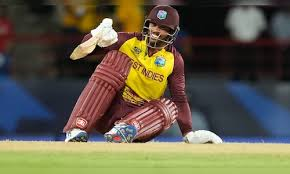
Brandon King
Batsman, opener.
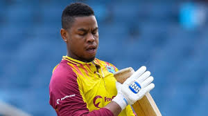
Shimron Hetmyer
Batsman, dynamic finisher.
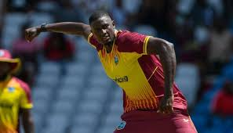
Jason Holder
All-rounder, pace bowler.
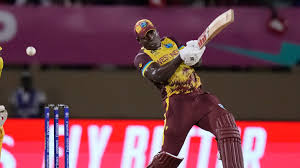
Rovman Powell
Batsman, middle-order.
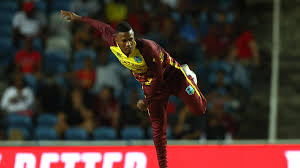
Akeal Hosein
Spinner, left-arm orthodox.
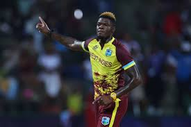
Alzarri Joseph
Bowler, pace spearhead.
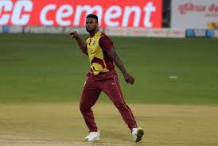
Romario Shepherd
All-rounder, medium-pacer.
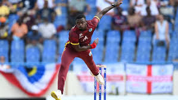
Jayden Seales
Bowler, pace bowler.
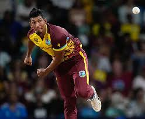
Gudakesh Motie
Spinner, left-arm orthodox.